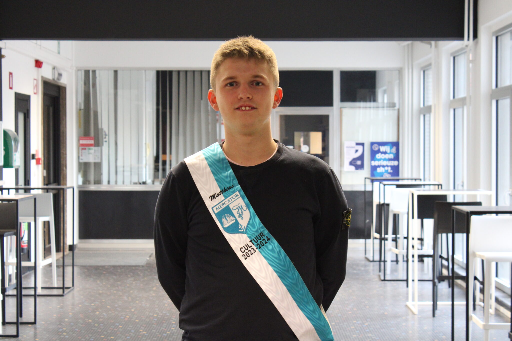
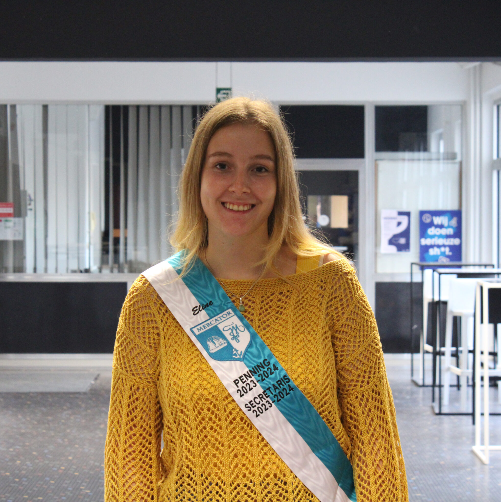
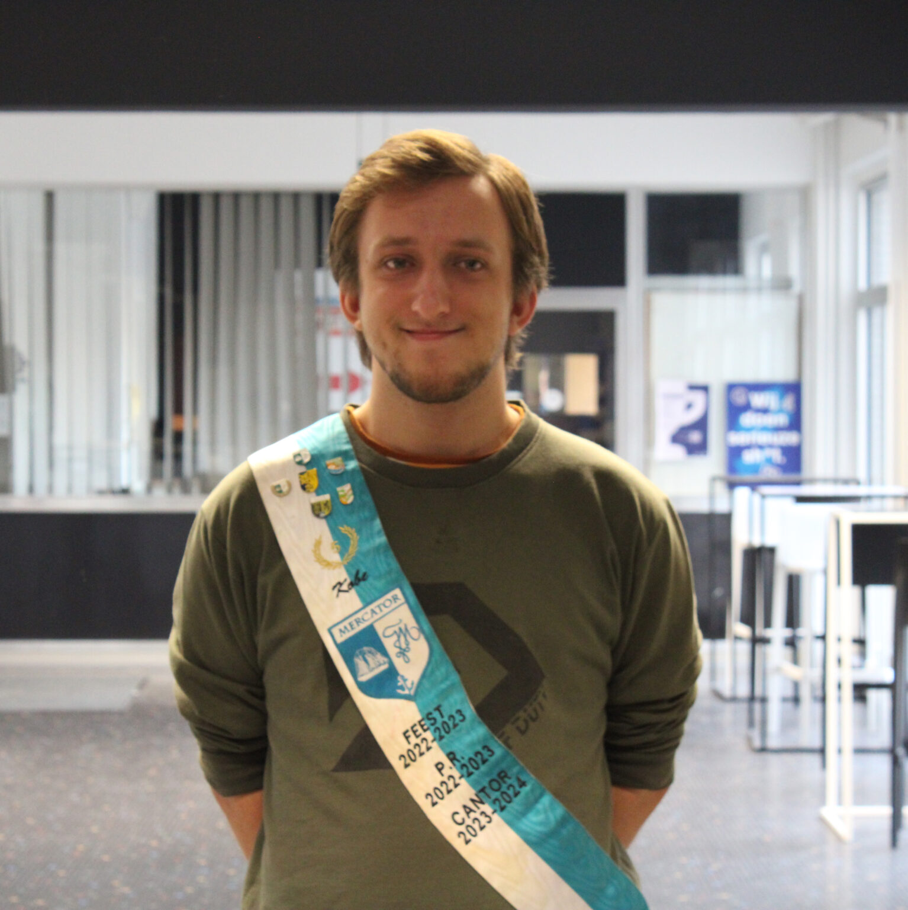
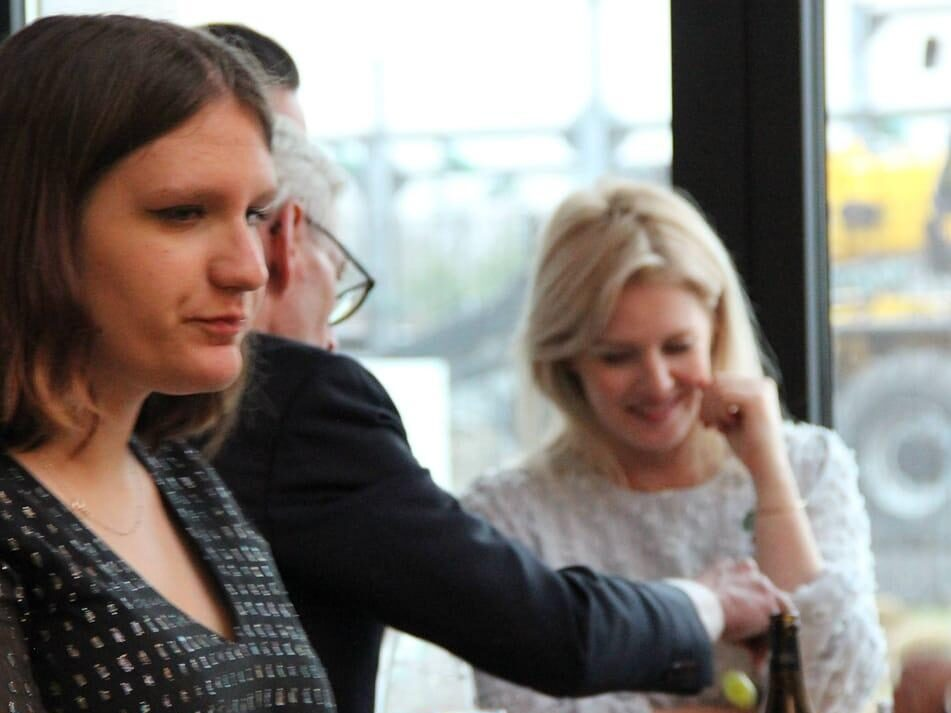
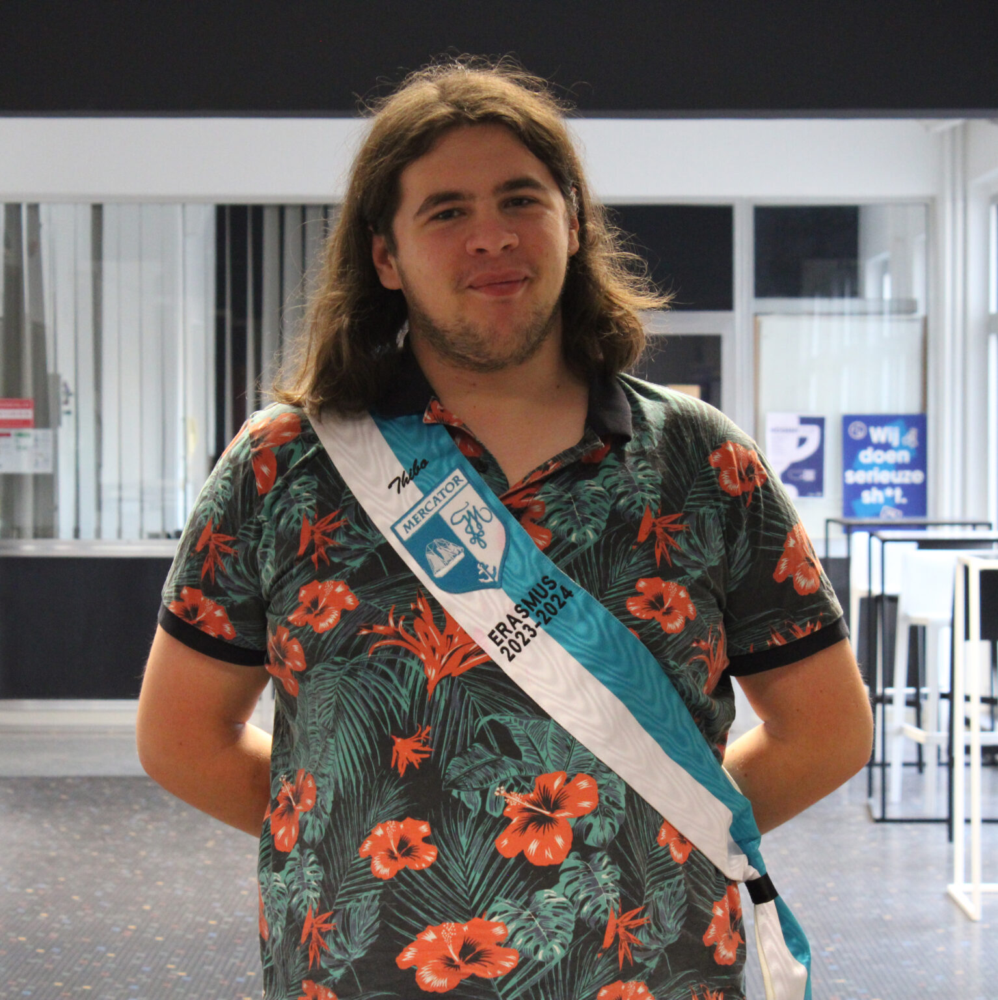

Praesidium 2023-2024
Vice-Praeses

Matthias Rateau
Bijnaam: Matthi/Matras
Studeert: Leerkracht Secundair Onderwijs, Economie en Geschiedenis
Geboren op: 26 november
Als ik niet in Gent ben: Hoogwaarschijnlijk aan het werken in Geraardsbergen
Relatiestatus: /
Meest nutteloos talent: Ik kan heel veel eten om een kwartier later weer honger te hebben!
Favoriete:
- Cantusliedje: T'nummerlieke! Dat is wel een van het Antwerpse Codex! Anders wel 'De rolders in de nacht'
- Boerderijdier: Baby-eendjes! Die zijn keischattig!
- Activiteit als schacht: Lustrumcantus waar ik niet veel meer van weet! Nogmaals sorry Maren voor de extra opkuis!
Dit wil ik nog over mezelf kwijt: "Ik verkies rode wijn boven witte wijn! Maar Tequila mag er ook zijn!!"
Secretaris & Penning

Eline Ballet
Bijnaam: /
Studeert: Orthopedagogie
Geboren op: 29 januari 2002
Als ik niet in Gent ben: Gistel
Relatiestatus: Bezet hihi
Meest nutteloos talent: Een hele dessertkaart bestellen ook al heb ik niet echt honger
Favoriete:
- Cantusliedje: Anne-Marieke
- Boerderijdier: Biggetjessssss
- Activiteit als schacht: Ledenweekend en eroticafuif
Dit wil ik nog over mezelf kwijt: "Ik hoop er met iedereen een geweldig jaar van te maken! Je kan ook altijd bij mij terecht."
Schachtentemmer
Maren Tanghe
Bijnaam: Iemand geef mij een leuke bijnaam pls
Studeert: Sociaal Werk
Geboren op: 21 januari 2003
Als ik niet in Gent ben: Niet in Gent
Relatiestatus: Niet bestaande
Meest nutteloos talent: Is zat 10 koprollen doen zonder spugen een talent?
Favoriete:
- Cantusliedje: Tinneke van Heule
- Boerderijdier: VARKENS >>>> (ik heb er lik 5 in mijn bed ofzo)
- Activiteit als schacht: Mercantussen (love the schachtenbak)
Dit wil ik nog over mezelf kwijt: "Oeps ik ben amper afgekomen, daarom kennen jullie me misschien niet."
Cantor

Kobe Gregoire
Bijnaam: Kokkie of Kockie
Studeert: Animatiefilm
Geboren op: 19 november 2001
Als ik niet in Gent ben: Zarlardinge
Relatiestatus: Single
Meest nutteloos talent: Op de gang kunnen slapen
Favoriete:
- Cantusliedje: Jan Klaassen de Trompetter
- Boerderijdier: Geitje
- Activiteit als schacht: De legendarische jeneverwandeling
Dit wil ik nog over mezelf kwijt: "Ik kijk er super hard naar uit om er weer een fantastisch jaar van te maken!"
Bar

Rune Declercq
Bijnaam: /
Studeert: Orthopedagogie
Geboren op: 9 augustus 2005
Als ik niet in Gent ben: Heule
Relatiestatus: Alleen
Meest nutteloos talent: Ik ben lenig
Favoriete:
- Cantusliedje: My Bonnie lies over the ocean
- Boerderijdier: Ezel
- Activiteit als schacht: Clubavonden
Dit wil ik nog over mezelf kwijt: "/"
Erasmus

Thibo Mertens
Bijnaam: /
Studeert: Lerarenopleiding Engels en Aardrijkskunde
Geboren op: 31 januari 2001
Als ik niet in Gent ben: Buggenhout
Relatiestatus: Single Pringle
Meest nutteloos talent: Verschillende gekke stemmetjes kunnen doen
Favoriete:
- Cantusliedje: Home on the range
- Boerderijdier: Lammetje
- Activiteit als schacht: (alle) cantussen
Dit wil ik nog over mezelf kwijt: "Ik ben een grote boardgame en D&D fan die altijd beschikbaar is voor een drankje en een spel!"
VM Feest
Margot Krijntjes
Bijnaam: Margow
Studeert: Audiologie
Geboren op: 27 september 1999
Als ik niet in Gent ben: Landen city (maar iedereen denkt Limburg lol)
Relatiestatus: Succesvolle Bumble-date gehad hihi
Meest nutteloos talent: Geen
Favoriete:
- Cantusliedje: Hihi HOOOOME ON THE RANGE
- Boerderijdier: Biggetjes
- Activiteit als schacht: Degene die ik mij nog herinner
Dit wil ik nog over mezelf kwijt: "Sorry wereld dat ik zo'n lomp geval ben!"
Meters & Peter
Nienke Demuynck
Bijnaam: /
Studeert: Human Resourcemanagement
Geboren op: 4 oktober 2001
Als ik niet in Gent ben: Gullegem
Relatiestatus: oei
Meest nutteloos talent: al mijn talenten zijn nuttig
Favoriete:
- Cantusliedje: Tineke van Heule
- Boerderijdier: Geit
- Activiteit als schacht: de bars
Dit wil ik nog over mezelf kwijt: "Ik vergeet veel, oeps."
Cheyenne Peynsaert
Bijnaam: Chenaenae
Studeert: Helemaal niets
Geboren op: 29 november 1996
Als ik niet in Gent ben: Nog steeds in Gent
Relatiestatus: Bezet
Meest nutteloos talent: Cosplay maken
Favoriete:
- Cantusliedje: Alouette
- Boerderijdier: Zwitserse koe
- Activiteit als schacht: Ontgroeningscantus
Dit wil ik nog over mezelf kwijt: "Ik slaap graag."
Griffin Woodgate
Bijnaam: Jua geen idee, 'k heb er zo veel gehad
Studeert: Niks de ballen, ik werk
Geboren op: Woensdag
Als ik niet in Gent ben: Lampernisse city, hoofdstad van europa (volgens mn pa)
Relatiestatus: Manhoer
Meest nutteloos talent: Dat'k beide m'n benen in m'n nek kan leggen
Favoriete:
- Cantusliedje: Mercator clublied uiteraard
- Boerderijdier: Een hond, omdat mij dat doet denken aan Jakob
- Activiteit als schacht: Eerste bootfeest
Dit wil ik nog over mezelf kwijt: "Fix mij eten en ik ben gelukkig dag en bedankt."
Vertrouwenscontact
Thibo Mertens & Eline Ballet
"Thibo Mertens en Eline Ballet zijn onze vertrouwenspersonen. De vertrouwenspersonen zijn er om je te helpen wanneer je vragen of problemen hebt waarmee je niet meteen weet naar wie je moet gaan ermee. Zij kunnen je verder helpen en doorverwijzen indien nodig. Ze zijn er ook altijd als je gewoon eens nood hebt aan een babbel."
Door hun statuut van vertrouwenspersoon zijn ze verplicht te zwijgen over wat hun in vertrouwen verteld wordt.